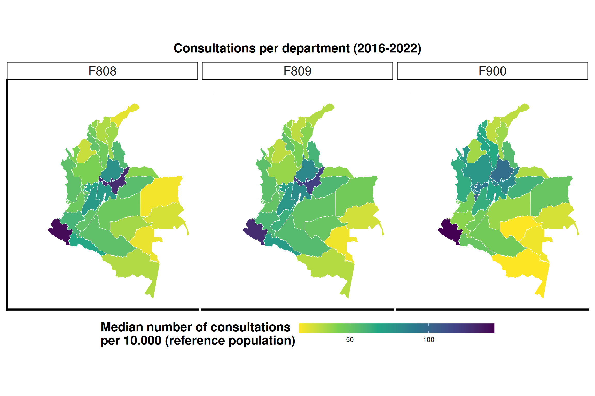
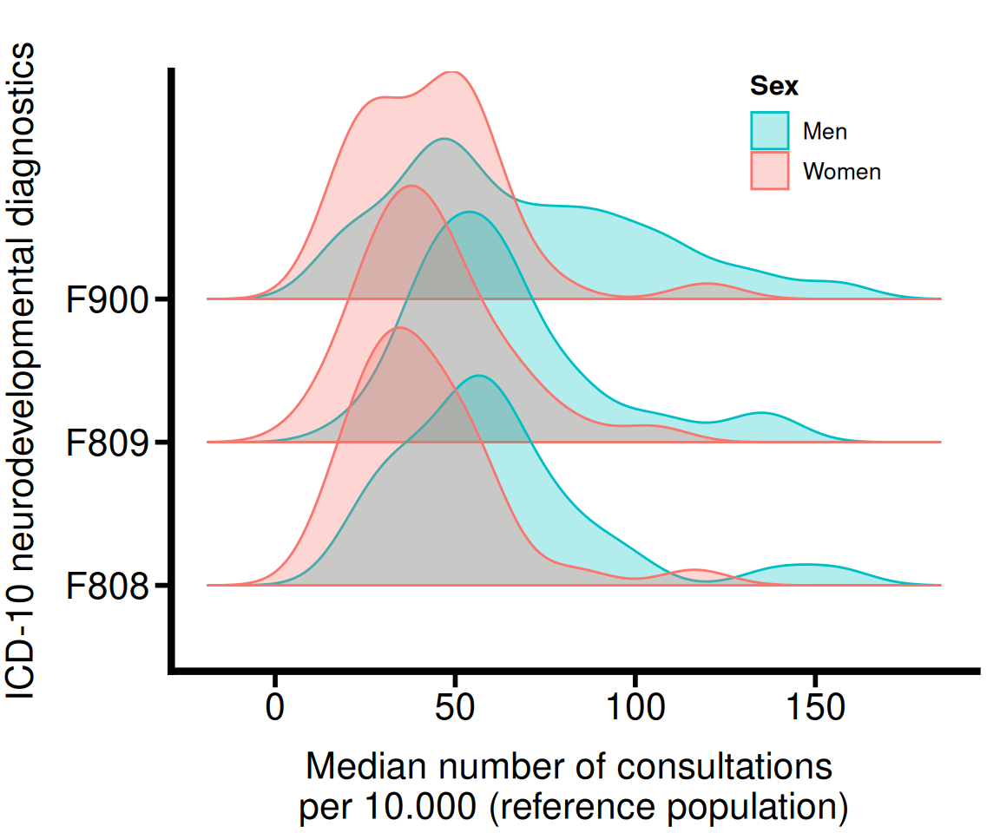
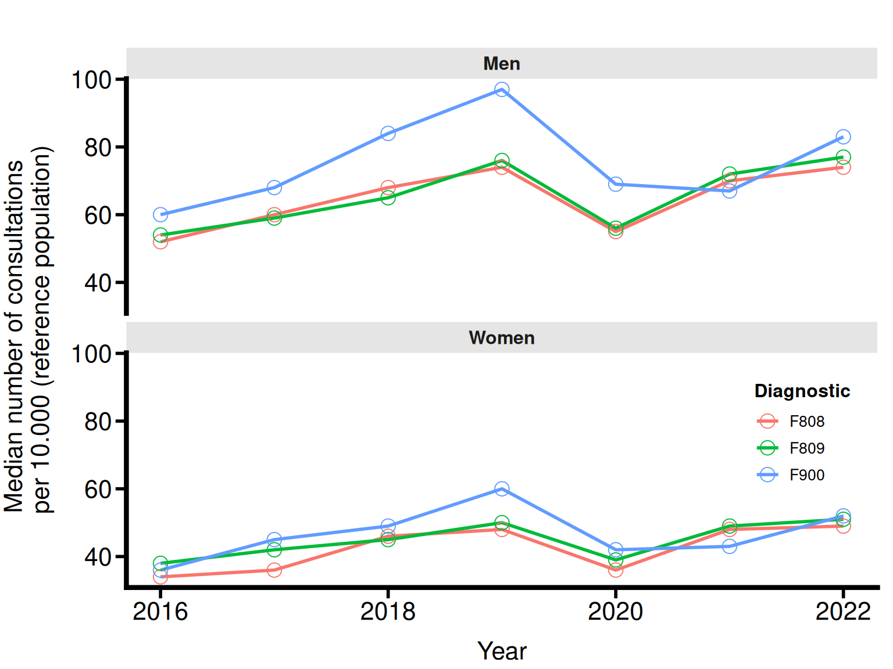
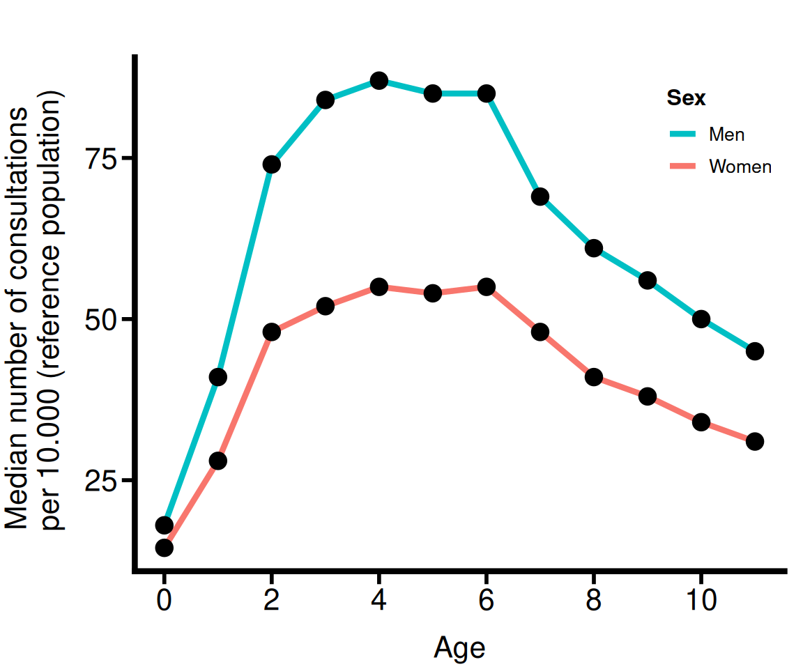

This first chunk sources the _common.R script, which loads all packages, the Plot_theme, and the cleaned Col_map_fixed object.
It then loads the subsetted data (Neuro_Data_MainDiag.csv) that was created by the previous notebook (see Diagnostic Frequency Analysis). All analysis in this file will be based on this “Top 3” dataset.
4.2 Geographical Distribution of Most Frequent Cases
We examine how the three most common neurodevelopmental diagnoses are distributed across Colombian departments. This analysis focuses on median consultation rates per 10,000 inhabitants, which allows us to compare regions while minimizing the influence of extreme values.
4.2.1 Data Preparation
We begin by summarizing the consultation frequency for each of the three focal diagnostic categories within every department. The data are grouped by Department and Diagnostic, and we compute the median number of consultations per 10,000 inhabitants. This measure gives a stable central estimate for each diagnostic–department combination.
`summarise()` has grouped output by 'Department'. You can override using the
`.groups` argument.
4.2.2 Results Table
To facilitate comparison across regions, we reshape the dataset so that each diagnostic category occupies its own column. The resulting wide-format table includes the median frequency for each diagnostic, along with a Total column that sums all three (“F808”, “F809”, “F900”). Departments are then ordered from highest to lowest total case burden.
Code
# --- 1. Pivot the data to wide format ---wide_geo_summary <- Summary_Common_Geography %>%pivot_wider(names_from = Diagnostic,values_from = MedianCases,values_fill =0 ) %>%mutate(Total_All_Cases =rowSums(across(where(is.numeric)))) %>%arrange(desc(Total_All_Cases))# --- 2. Create APA-style gt table ---geo_table <- wide_geo_summary %>%gt() %>%tab_header(title =md("**Table 2. Median neurodevelopmental consultations per 10.000 inhabitants**") ) %>%cols_label(Department ="Department",Total_All_Cases ="Total" ) %>%fmt_number(columns =where(is.numeric),use_seps =TRUE,decimals =0 ) %>%# APA 7 stylingtheme_apa_gt() %>%tab_source_note(source_note ="Median number of consultations per 10,000 inhabitants, grouped by department and diagnostic category." )# --- 3. Save files ---gtsave(geo_table, filename ="Tables/Geo_Summary.html")gtsave(geo_table, filename ="Tables/Geo_Summary.tex")geo_table
Table 4.1: Total Cases by Department and Main Diagnostic
Table 2. Median neurodevelopmental consultations per 10.000 inhabitants
Department
F808
F809
F900
Total
Narino
139
128
142
408
Boyaca
128
119
84
331
Santander
79
84
97
260
Caldas
70
74
93
237
Cundinamarca
75
82
70
227
Tolima
75
76
64
215
Quindio
58
51
103
212
Putumayo
68
74
50
192
Risaralda
51
53
85
189
Casanare
55
58
61
174
Sucre
52
53
69
174
Norte de Santander
57
60
56
173
Choco
53
54
65
172
Archipielago de San Andres, Providencia Y Santa Catalina
48
47
70
166
Huila
52
63
46
161
Cauca
60
59
40
159
Bolivar
47
44
67
158
Antioquia
43
38
76
157
Caqueta
53
56
46
155
Valle del Cauca
48
51
45
144
Atlantico
39
38
65
142
Meta
48
51
38
136
Vichada
20
46
50
116
Arauca
41
40
34
115
Cesar
37
41
37
115
Guaviare
36
50
18
103
Cordoba
29
31
36
96
Magdalena
34
31
31
96
La Guajira
23
33
31
87
Amazonas
33
32
18
84
Guainia
26
27
26
79
Vaupes
22
21
21
64
Median number of consultations per 10,000 inhabitants, grouped by department and diagnostic category.
After summarizing the median burden of the three most frequent neurodevelopmental diagnostic categories (F808, F809, F900) across all departments in Table 4.1, we identify the ten departments with the highest combined consultation rates and extract them using slice_max() on the total median burden.
Code
library(gt)# --- 1. Select the top 10 departments by total burden ---geo_top10 <- wide_geo_summary %>%slice_max(Total_All_Cases, n =10)# --- 2. Create APA-style gt table ---geo_top10_gt <- geo_top10 %>%gt() %>%tab_header(title =md("**Table X. Top 10 departments by median neurodevelopmental consultations per 10,000 inhabitants**"),subtitle ="Values correspond to median consultation rates for the three most frequent diagnostic categories." ) %>%cols_label(Department ="Department",F808 ="F808",F809 ="F809",F900 ="F900",Total_All_Cases ="Total" ) %>%fmt_number(columns =where(is.numeric),use_seps =TRUE,decimals =0 ) %>%theme_apa_gt() %>%tab_source_note(source_note ="Note. Departments are ordered by the total median burden across the three most frequent diagnostic categories." )geo_top10_gt# --- 3. Export gt table to HTML and LaTeX ---gtsave(geo_top10_gt, filename ="Tables/Geo_Top10.html")gtsave(geo_top10_gt, filename ="Tables/Geo_Top10.tex")
Table 4.2: Top 10 departments by median neurodevelopmental consultations
Table X. Top 10 departments by median neurodevelopmental consultations per 10,000 inhabitants
Values correspond to median consultation rates for the three most frequent diagnostic categories.
Department
F808
F809
F900
Total
Narino
139
128
142
408
Boyaca
128
119
84
331
Santander
79
84
97
260
Caldas
70
74
93
237
Cundinamarca
75
82
70
227
Tolima
75
76
64
215
Quindio
58
51
103
212
Putumayo
68
74
50
192
Risaralda
51
53
85
189
Casanare
55
58
61
174
Sucre
52
53
69
174
Note. Departments are ordered by the total median burden across the three most frequent diagnostic categories.
The table presents the median number of consultations per 10,000 inhabitants for each of the three diagnostic groups, along with a total column representing the combined burden. This structure highlights the departments where neurodevelopmental consultations occur most frequently and provides a clear comparative overview.
We exported the table to HTML and LaTeX via gt, and then generate a version for Microsoft Word using flextable with borders and layout:
Table 4.3
Code
library(flextable)library(officer)geo_top10_ft <-flextable(geo_top10)geo_top10_ft <- geo_top10_ft %>%# set simple header labelsset_header_labels(Department ="Department",F808 ="F808",F809 ="F809",F900 ="F900",Total_All_Cases ="Total" ) %>%theme_apa_flextable() %>%# center header, boldalign(part ="header", align ="center") %>%bold(part ="header", bold =TRUE) %>%# right-align numeric columnsalign(j =c("F808", "F809", "F900", "Total_All_Cases"),align ="right",part ="body" ) %>%# add table noteadd_footer_lines(values ="Note. Departments are ordered by the total median burden across the three most frequent diagnostic categories." ) %>%align(part ="footer", align ="left")# Export to Wordsave_as_docx("Table X. Top 10 departments by median neurodevelopmental consultations per 10,000 inhabitants"= geo_top10_ft,path ="Tables/Geo_Top10.docx")
4.2.3 Data Visualization (Faceted Map)
We join our Summary_Common_Geography with the Col_map_fixed object (from _common.R). We then use facet_wrap(~ Diagnostic) to create a “small multiple” map, showing the geographic distribution for each of the three diagnostics side-by-side.
We next create a visualization for the three most common neurodevelopmental diagnostic categories (F808, F809, and F900). We join the calculated rate per 10,000 inhabitants with the national shapefile and generate a faceted map to make regional differences easier to compare. Departments with lower consultation rates appear in light colors (yellow–green), while those with higher rates appear in darker tones.
Code
# Join map data with top-3 diagnostic dataMap_df <- Col_map_fixed %>%left_join(Summary_Common_Geography, by ="Department")# We exclude NAs (departments with no cases for these diagnostics)Map_df <- Map_df %>%filter(!is.na(MedianCases))# Create the faceted mapCases_Diagnostic_map <-ggplot(Map_df) +geom_sf(aes(fill = MedianCases), colour ="white", size =0.2) +scale_fill_viridis_c(option ="viridis",direction =-1,name ="Median number of consultations \nper 10.000 (reference population)",guide =guide_colorbar(barwidth =unit(10, "cm"), barheight =unit(0.5, "cm") ) ) +facet_wrap(~ Diagnostic) +labs(title ="Consultations per department (2016-2022)") +theme_minimal() + Plot_theme +theme(plot.title =element_text(size=18, face="bold", vjust =2, hjust =0.5),legend.title =element_text(colour="black", face="bold", size=18),axis.text.y =element_blank(),axis.text.x =element_blank(),axis.ticks.y =element_blank(),axis.ticks.x =element_blank(),legend.position ="bottom",legend.direction ="horizontal",strip.text =element_text(size =18) ) ggsave(Cases_Diagnostic_map,filename ="Plots/Cases_Diagnostic_map.png",width =40, height =20, units ="cm")Cases_Diagnostic_map

Figure 4.1: Distribution of neurodevelopmental diagnostics per department and capital city status
The resulting Figure 4.1 displays three side-by-side maps covering the entire period (2016–2022), providing an overview of which regions report the highest and lowest median consultation intensity for each diagnostic code.
4.3 Distribution per Diagnostic and Sex
In this section, we examine whether the three most frequent diagnostic categories (F808, F809, and F900) show different consultation patterns for men and women across Colombian departments. We summarize the data by computing the median number of consultations per 10,000 inhabitants for each combination of department, diagnostic category, and biological sex.
4.3.1 Data Preparation
To prepare the data, we group observations by Department, Diagnostic, and Sex, and compute two quantities for each combination:
The median consultation rate per 10,000 inhabitants (MedianCases)
The total population represented (Total_Population), aggregated across all years
`summarise()` has grouped output by 'Department', 'Diagnostic'. You can
override using the `.groups` argument.
Code
Summary_Diagnostic_Sex
# A tibble: 192 × 5
Department Diagnostic Sex MedianCases Total_Population
<chr> <chr> <chr> <dbl> <int>
1 Amazonas F808 Men 34 33115
2 Amazonas F808 Women 18 26885
3 Amazonas F809 Men 34 35787
4 Amazonas F809 Women 18 20988
5 Amazonas F900 Men 18 14201
6 Amazonas F900 Women 18 2250
7 Antioquia F808 Men 51 3128599
8 Antioquia F808 Women 32 2450118
9 Antioquia F809 Men 48 2929082
10 Antioquia F809 Women 31.5 2298031
# ℹ 182 more rows
4.3.2 Summary Table (Sex & Diagnostic)
To quantify these patterns, we compute descriptive statistics—N, Mean, Median, SD, Min, Max—for each diagnostic category and sex. These values summarize the department-level distribution of consultation rates and reinforce the visualization.
We see that across all three diagnostics, men show higher means and medians. The differences between sexes are largest for F809 and F900, where medians differ by about 20–25 consultations per 10,000 inhabitants. Standard deviations are consistently larger for men, suggesting more heterogeneity across departments.
The summary data is formatted with gt. We use gt(groupname_col = "Diagnostic") to create a clean, hierarchical table grouped by diagnostic, which is ideal for this type of summary. We also format the numeric columns to 0 decimal places, as they are rounded integers.
Code
# Create the gt tablepublication_table_sex <- summary_table_sex %>%gt(groupname_col ="Diagnostic") %>%cols_label(Sex ="Sex",N ="N",Mean ="Mean",Median ="Median",SD ="SD",Min ="Min",Max ="Max" ) %>%# Format numbers with 0 decimalsfmt_number(columns =c(N, Mean, Median, SD, Min, Max),use_seps =TRUE,decimals =0 ) %>%# --- APA 7 STYLING ---theme_apa_gt()# Save the tablegtsave(publication_table_sex,filename ="Tables/Diagnostic_Sex_Summary.html")gtsave(publication_table_sex,filename ="Tables/Diagnostic_Sex_Summary.tex")publication_table_sex
Table 4.4: Descriptive Statistics for Consultations by Diagnostic and Sex
Sex
N
Mean
Median
SD
Min
Max
F808
Men
32
61
57
30
22
156
Women
32
41
36
20
15
116
F809
Men
32
63
60
27
21
139
Women
32
43
40
20
10
105
F900
Men
32
68
59
35
18
156
Women
32
43
44
21
17
120
4.3.3 Data Visualization (Ridge-Density Plot)
To visualize the distribution of consultation rates across departments, we generate a ridge-density plot for each diagnostic category. By overlaying the densities for men and women, we compare not only central tendencies but also variability and the presence of extreme values.
Warning: A numeric `legend.position` argument in `theme()` was deprecated in ggplot2
3.5.0.
ℹ Please use the `legend.position.inside` argument of `theme()` instead.
Code
ggsave(Diagnostic_Sex_fig,filename ="Plots/Diagnostic_Sex_fig.png",width =15, height =15, units ="cm")
Picking joint bandwidth of 9.56
Code
Diagnostic_Sex_fig
Picking joint bandwidth of 9.56

Figure 4.2: Distribution of neurodevelopmental diagnostics per biological sex
The Figure 4.2 shows clear and systematic sex differences across all three diagnostic groups:
Men consistently present higher consultation rates than women for F808, F809, and F900.
The shape of the distributions indicates greater variability among men, particularly for F809 and F900.
Women generally show more concentrated distributions with lower medians and narrower ranges.
4.3.4 Statistical Model
We now move from descriptive summaries to a hierarchical regression model that tests how consultation rates vary jointly by diagnostic category and biological sex while accounting for geographical structure.
4.3.4.1 Data Preparation
For the modeling step, we treat each city as an individual observation. We therefore summarize the data by city, department, diagnostic category, and sex, and compute the mean number of consultations per 10,000 inhabitants (MeanCases) for each combination. This gives us a dataset in which every row corresponds to a specific city–department–diagnostic–sex cell, which we then use as input for the model.
`summarise()` has grouped output by 'City', 'Department', 'Diagnostic'. You can
override using the `.groups` argument.
Code
Summary_Diagnostic_Sex_2
# A tibble: 6,091 × 5
City Department Diagnostic Sex MeanCases
<chr> <chr> <chr> <chr> <dbl>
1 Abejorral Antioquia F808 Men 99.6
2 Abejorral Antioquia F808 Women 74.6
3 Abejorral Antioquia F809 Men 97.9
4 Abejorral Antioquia F809 Women 82.4
5 Abejorral Antioquia F900 Men 94.2
6 Abejorral Antioquia F900 Women 76.8
7 Abrego Norte de Santander F808 Men 56.4
8 Abrego Norte de Santander F808 Women 40.3
9 Abrego Norte de Santander F809 Men 56.4
10 Abrego Norte de Santander F809 Women 39.9
# ℹ 6,081 more rows
4.3.4.2 Model Specification
We use the brms package to fit a Bayesian multilevel model with a Student-t likelihood. The outcome is the mean number of consultations per 10,000 inhabitants (MeanCases). At the fixed-effect level, we include sex, diagnostic category, and their interaction (Sex * Diagnostic). To account for residual geographical differences between departments, we add a varying intercept for department (1 | Department).
This structure allows us to estimate:
the overall differences between men and women,
how those differences change across the three diagnostic categories, and
how much consultation intensity varies between departments after controlling for sex and diagnosis.
We use weakly informative priors (the brms defaults for the Student-t family), run four Markov chains with 5,000 iterations each (2,500 warm-up), and increase adapt_delta and max_treedepth to ensure stable sampling.
4.3.4.3 Fit the Model
We model the mean number of consultations per 10,000 inhabitants as:
\[
\text{MeanCases}_{i j k s}
= \beta_0
+ \beta_{\text{Sex},s}
+ \beta_{\text{Diag},k}
+ \beta_{\text{Sex}\times\text{Diag}, s k}
+ u_j
+ \varepsilon_{i j k s},
\]
\(s\) indexes biological sex (\(s \in \{\text{Men}, \text{Women}\}\)).
We use treatment coding so that:
\(s = \text{Men}\) and \(k = \text{F808}\) define the reference group,
\(\beta_0\) is the expected mean consultation rate for men with diagnosis F808,
\(\beta_{\text{Sex},\text{Women}}\) is the average difference between women and men for F808,
\(\beta_{\text{Diag},\text{F809}}\) and \(\beta_{\text{Diag},\text{F900}}\) are the average differences between F809 / F900 and F808 for men,
\(\beta_{\text{Sex}\times\text{Diag},\text{Women},k}\) are the additional sex differences specific to each diagnostic category (i.e., how the women–men contrast changes for F809 or F900 relative to F808).
and the observation-level errors follow a Student-t distribution:
\[
\varepsilon_{i j k s} \sim t_\nu(0, \sigma),
\]
with degrees of freedom \(\nu\) and scale parameter \(\sigma\) estimated from the data.
Code
# Model formulaCases_Diagnostic_Sex_Mdl1 <-bf(MeanCases ~ Sex * Diagnostic + (1| Department))# List priors and variablesget_prior(Cases_Diagnostic_Sex_Mdl1, Summary_Diagnostic_Sex_2, family = student)# Fit model 1Cases_Diagnostic_Sex_Fit1 <-brm(family = student,data = Summary_Diagnostic_Sex_2,formula = Cases_Diagnostic_Sex_Mdl1,chains =4,cores =4,warmup =2500, iter =5000, seed =8807,control =list(adapt_delta =0.99, max_treedepth =15),file ="Models/Cases_Diagnostic_Sex_Fit1.rds",file_refit ="never")
4.3.4.4 Results
Code
tbl_cases_sex <-tbl_regression(x = Cases_Diagnostic_Sex_Fit1,intercept =TRUE,estimate_fun =~style_sigfig(., digits =2),conf.level =0.95) %>%modify_header( label ~"**Predictor**", estimate ~"**Estimate**", ci ~"**95% CI**" ) %>%bold_labels() %>%modify_caption("**Table 1. Effect of biological sex on neurodevelopmental consultation rates**" )tbl_cases_sex
Table 4.5: Table 1. Effect of biological sex on neurodevelopmental consultation rates
Predictor
Estimate
95% CI
95% CI1
(Intercept)
91
77, 106
77, 106
Sex
SexWomen
-12
-17, -6.9
-17, -6.9
Diagnostic
DiagnosticF809
1.1
-4.2, 6.4
-4.2, 6.4
DiagnosticF900
2.2
-3.2, 7.7
-3.2, 7.7
Department
SexWomen:DiagnosticF809
-1.4
-8.9, 6.1
-8.9, 6.1
SexWomen:DiagnosticF900
-4.0
-12, 3.6
-12, 3.6
1 CI = Credible Interval
The intercept of the model corresponds to men diagnosed with F808, who show an estimated mean of about 91 consultations per 10,000 inhabitants. This provides a baseline against which we interpret the remaining effects. The coefficient for SexWomen is strongly negative (around −12), with a 95% credible interval that excludes zero, meaning that, for F808, women show substantially fewer consultations than men on average.
For men, F900 is associated with higher consultation rates than F808, with posterior estimates suggesting an increase of roughly 13 consultations per 10,000 inhabitants and a credible interval that lies entirely above zero. In contrast, the difference between F809 and F808 for men is small and uncertain, with a credible interval that spans zero. The interaction terms indicate that the sex difference for F809 and F900 may be slightly larger (more negative) than for F808, but the uncertainty is wide and the credible intervals include zero, so we treat these diagnosis-specific modifications as weak at best.
The random-effect standard deviation for departments (around 40) highlights substantial variability in consultation intensity across regions after adjusting for sex and diagnosis, while the residual standard deviation (around 47) reflects remaining city-level variability and measurement noise.
4.4 Most Frequent per Year and Sex
We now examine how the three most frequent diagnostic categories evolve over time for men and women. By combining Year, Sex, and Diagnostic, we obtain a compact view of temporal trends in consultation intensity.
4.4.1 Data Preparation
We first summarize the data by Year, Sex, and Diagnostic. For every combination of these three variables, we compute the median number of consultations per 10,000 inhabitants (MedianCases). This gives us a balanced panel where each row corresponds to a specific year–sex–diagnostic cell, and the outcome is a robust central estimate that is less sensitive to extreme values than the mean.
The resulting Summary_Main_YearSex table serves as the basis for the crosstab and for any subsequent visualizations of time trends.
`summarise()` has grouped output by 'Year', 'Sex'. You can override using the
`.groups` argument.
Code
Summary_Main_YearSex
# A tibble: 42 × 4
Year Sex Diagnostic MedianCases
<int> <chr> <chr> <dbl>
1 2016 Men F808 52
2 2016 Men F809 54
3 2016 Men F900 60
4 2016 Women F808 34
5 2016 Women F809 38
6 2016 Women F900 36
7 2017 Men F808 60
8 2017 Men F809 59
9 2017 Men F900 68
10 2017 Women F808 36
# ℹ 32 more rows
4.4.2 Results Table
Because we are working with three variables (Year, Sex, Diagnostic), a long table would be hard to read. Instead, we reorganize the data into a wide-format crosstab where:
rows are defined by Year and Sex, and
columns correspond to the three diagnostic codes (F808, F809, F900).
We obtain this layout by applying pivot_wider() to Summary_Main_YearSex, using Diagnostic as the source of new column names and MedianCases as the cell values. We then order the rows by Year and Sex so that time flows from top to bottom and men/women appear consistently within each year.
Finally, we format the table with gt using APA-style options. We label the Year and Sex columns, format all numeric diagnostic columns as whole numbers, and remove internal vertical lines to enhance readability.
Code
library(dplyr)library(tidyr) library(gt)# --- 2. Pivot 'Diagnostic' to be wide ---wide_diag_summary <- Summary_Main_YearSex %>%pivot_wider(names_from = Diagnostic,values_from = MedianCases,values_fill =0 ) %>%arrange(Year, Sex) # --- 3. Create the APA 7 gt table ---diag_table <- wide_diag_summary %>%gt() %>%cols_label(Year ="Year",Sex ="Sex" ) %>%# Format all numeric columns *except* 'Year' with commasfmt_number(columns =where(is.numeric) &!matches("^Year$"),use_seps =TRUE,decimals =0 ) %>%# --- THIS IS THE FIX ---# Format the 'Year' column *without* commas and *with 0 decimals*fmt_number(columns = Year,use_seps =FALSE,decimals =0 ) %>%# --- APA 7 STYLING ---theme_apa_gt()# --- 4. Save the table files ---gtsave(diag_table,filename ="Tables/YearSexDiag_Wide.html")gtsave(diag_table,filename ="Tables/YearSexDiag_Wide.tex")# --- 5. Display the table ---diag_table
Table 4.6: Total Cases by Year, Sex, and Main Diagnostic
Year
Sex
F808
F809
F900
2016
Men
52
54
60
2016
Women
34
38
36
2017
Men
60
59
68
2017
Women
36
42
45
2018
Men
68
65
84
2018
Women
46
45
49
2019
Men
74
76
97
2019
Women
48
50
60
2020
Men
55
56
69
2020
Women
36
39
42
2021
Men
70
72
67
2021
Women
48
49
43
2022
Men
74
77
83
2022
Women
49
51
52
4.4.3 Data Visualization (Faceted Line Plot)
We visualize these temporal patterns using a faceted line plot. The x-axis represents calendar year, and the y-axis shows the median number of consultations per 10,000 inhabitants. Each diagnostic category (F808, F809, F900) is plotted as a separate colored line with points marking annual values. The plot is faceted by sex (facet_wrap(~ Sex)), producing one panel for men and one for women.
Code
Cases_Year_fig <- Summary_Main_YearSex %>%ggplot( aes(x= Year, y= MedianCases, colour = Diagnostic)) +geom_line(size=1) +geom_point(shape=21, size=4) +scale_y_continuous(name ="Median number of consultations \n per 10.000 (reference population)",labels = scales::label_number(scale_cut = scales::cut_short_scale())) +ggtitle("") +labs(x ="Year") +facet_wrap(~ Sex, ncol =1) + Plot_theme +theme(legend.position =c(0.9, 0.3),# Style the facet labels to make them clearstrip.text =element_text(size =12, face ="bold", hjust =0.5),strip.background =element_rect(fill ="grey90", color =NA) )
Warning: Using `size` aesthetic for lines was deprecated in ggplot2 3.4.0.
ℹ Please use `linewidth` instead.
Code
ggsave(Cases_Year_fig,filename ="Plots/Cases_Year_fig.png",width =14, height =13, units ="cm")Cases_Year_fig

Figure 4.3: Distribution of neurodevelopmental disorder cases per year
4.5 Cases by Sex and Age
We first summarize the dataset by age and biological sex. For each age–sex combination, we compute the median number of neurodevelopmental consultations per 10,000 inhabitants and the total population size contributing to that value.
4.5.1 Data Preparation
We group the data by Age and Sex, summarizing both Total_Cases and Total_Population.
`summarise()` has grouped output by 'Age'. You can override using the `.groups`
argument.
4.5.2 Results Table
To present the results clearly, we reshape the data so that “Men” and “Women” appear as column groups. Each group contains two variables—median consultations and population size—making comparison across ages straightforward.
Code
library(dplyr)library(tidyr) # Needed for pivot_widerlibrary(gt)# --- 2. Pivot 'Sex' to be wide ---# This creates new columns like "Total_Cases_Men", "Total_Population_Men", etc.wide_age_sex_summary <- Summary_Age_Sex %>%pivot_wider(names_from = Sex,values_from =c(MedianCases, Total_Population),values_fill =0 ) %>%arrange(Age) # Sort by Age# --- 3. Create the APA 7 gt table ---agesex_table <- wide_age_sex_summary %>%gt() %>%# --- Create spanner headers for "Men" and "Women" ---# Assumes your 'Sex' column has "Men" and "Women". Adjust if needed.tab_spanner(label ="Men",columns =c(MedianCases_Men, Total_Population_Men) ) %>%tab_spanner(label ="Women",columns =c(MedianCases_Women, Total_Population_Women) ) %>%# Relabel columns under the spannerscols_label(Age ="Age Group",MedianCases_Men ="Consultations",Total_Population_Men ="Population",MedianCases_Women ="Consultations",Total_Population_Women ="Population" ) %>%# Format all numeric columns *except* 'Age' with commasfmt_number(columns =where(is.numeric) &!matches("^Age$"),use_seps =TRUE,decimals =0 ) %>%# --- APA 7 STYLING ---theme_apa_gt()# --- 4. Save the table files ---gtsave(agesex_table,filename ="Plots/AgeSex_Summary.html")gtsave(agesex_table,filename ="Plots/AgeSex_Summary.tex")# --- 5. Display the table ---agesex_table
Table 4.7: Total Cases and Population by Age Group and Sex
Age Group
Men
Women
Consultations
Population
Consultations
Population
0
18
3,012,163
14
2,499,885
1
41
4,583,491
28
3,820,145
2
74
5,575,748
48
4,640,155
3
84
5,993,173
52
4,996,775
4
87
6,580,896
55
5,454,308
5
85
7,078,441
54
5,871,140
6
85
7,658,365
55
6,615,193
7
69
8,354,956
48
6,911,757
8
61
8,660,914
41
6,926,568
9
56
8,450,191
38
6,592,392
10
50
8,256,970
34
6,489,910
11
45
8,436,602
31
6,399,787
4.5.3 Data Visualization
We then visualize the age trajectories separately for men and women. The line chart displays median consultation rates at each age (0–11 years), allowing us to identify developmental windows where consultations increase sharply or begin to decline.
Code
Age_Sex_fig <- Summary_Age_Sex %>%ggplot(aes(x= Age, y= MedianCases, color = Sex)) +geom_line(size=1.5) +geom_point(shape=21, color ="black", fill ="black", size=4) +ggtitle("") +scale_fill_manual(values =c("Men"="#00BFC4", "Women"="#F8766D")) +scale_color_manual(values =c("Men"="#00BFC4", "Women"="#F8766D")) +scale_x_continuous(breaks =seq(0, 11, by =2)) +labs(y ="Median number of consultations \n per 10.000 (reference population)",x ="Age") + Plot_theme +theme (legend.position =c(0.9, 0.85),legend.direction ="vertical") ggsave(Age_Sex_fig ,filename ="Plots/Age_Sex_fig .png",width =12, height =12, units ="cm")
Warning: No shared levels found between `names(values)` of the manual scale and the
data's fill values.
Code
Age_Sex_fig
Warning: No shared levels found between `names(values)` of the manual scale and the
data's fill values.

Figure 4.4: Distribution of neurodevelopmental diagnostics per biological sex and age
Figure 4.4 shows that males are more likely to be diagnosed, although both sexes peak at 6 years. Given the change in the trend, we find it suitable to model these behaviors using splines.
4.5.4 Statistical Modeling
The age profiles in Figure Figure 4.4 show a clear non-linear pattern for both sexes, with a rapid increase in consultations during early childhood, a peak around school entry, and a gradual decline thereafter. To describe these trajectories more formally, we model the mean number of consultations per 10,000 inhabitants as a smooth function of age, allowing the shape of the curve to differ between men and women.
We work at the level of City × Sex × Age, which preserves spatial and demographic variability while keeping the outcome interpretable as an age-specific rate. We use a Student-t likelihood to remain robust to occasional extreme values and include a department-level random intercept to account for clustering of cities within departments.
4.5.4.1 Data Preparation for the Spline Model
We next examine how consultation rates vary jointly with age and biological sex. To do this, we first summarise the neurodevelopmental diagnostics at the level of age–sex combinations. For each age in years (0–11) and each sex (men, women), we compute the mean number of consultations per 10,000 individuals in the corresponding reference population:
MeanCases = mean of Diagnostics_per_tenthousand
based on all city-level observations contributing to that age–sex cell.
This aggregation gives us a smooth age profile for each sex and reduces the influence of highly variable single-city measurements.
# A tibble: 19,164 × 6
City Department Age Sex MeanCases Total_Population
<chr> <chr> <int> <chr> <dbl> <int>
1 Abejorral Antioquia 1 Women 76.5 262
2 Abejorral Antioquia 2 Men 77.7 774
3 Abejorral Antioquia 2 Women 77.3 388
4 Abejorral Antioquia 3 Men 98.3 918
5 Abejorral Antioquia 3 Women 75.5 265
6 Abejorral Antioquia 4 Men 124. 1219
7 Abejorral Antioquia 4 Women 75 534
8 Abejorral Antioquia 5 Men 82.5 848
9 Abejorral Antioquia 5 Women 75 266
10 Abejorral Antioquia 6 Men 85.5 1166
# ℹ 19,154 more rows
4.5.4.2 Fit the Model
We model the mean consultation rate as a function of sex and a smooth function of age that is allowed to differ between men and women. The model is defined as:
\[
\text{MeanCases}_{i s a}
= \beta_0
+ \beta_{\text{Sex},s}
+ f_s(\text{Age}_{a})
+ \varepsilon_{i s a},
\]
where:
\(i\) indexes cities,
\(s\) indexes biological sex (\(s \in \{\text{Men}, \text{Women}\}\)),
\(a\) indexes age groups.
Here:
\(\beta_0\) is the intercept (expected consultation rate for men at Age = 0),
\(\beta_{\text{Sex},s}\) adjusts the baseline for women relative to men,
\(f_s(\text{Age})\) is a sex-specific smooth spline function that captures the nonlinear age profile,
\(\varepsilon_{i s a} \sim t_\nu(0, \sigma)\) is a Student-t residual term that provides robustness to extreme values and heterogeneity in the outcome.
The Student-t likelihood is:
\[
\text{MeanCases}_{i s a} \sim t_\nu(\mu_{i s a},\, \sigma),
\]
Age_Sex_mdl <-bf( MeanCases ~ Sex +s(Age, by = Sex, k =2))Age_Sex_Fit1 <-brm(family = student,data = Summary_Age_Sex,formula = Age_Sex_mdl,chains =4,cores =4,warmup =2500, iter =5000, seed =8807,control =list(adapt_delta =0.99, max_treedepth =15),file ="Models/Age_Sex_Fit1.rds",file_refit ="never")
Here, sex enters as a fixed effect and captures the average difference between men and women at the reference age.
s(Age, by = Sex) fits separate penalised spline curves of age for men and women, so the shape of the age effect can differ by sex.
We use a Student-t likelihood (family = student) to accommodate heavy-tailed residuals and occasional extreme age–sex observations.
4.5.4.3 Model Results
We can visualize the results using the summary function.
Code
summary(Age_Sex_Fit1)
Warning: There were 4 divergent transitions after warmup. Increasing
adapt_delta above 0.99 may help. See
http://mc-stan.org/misc/warnings.html#divergent-transitions-after-warmup
Family: student
Links: mu = identity; sigma = identity; nu = identity
Formula: MeanCases ~ Sex + s(Age, by = Sex, k = 2)
Data: Summary_Age_Sex (Number of observations: 19164)
Draws: 4 chains, each with iter = 5000; warmup = 2500; thin = 1;
total post-warmup draws = 10000
Smoothing Spline Hyperparameters:
Estimate Est.Error l-95% CI u-95% CI Rhat Bulk_ESS Tail_ESS
sds(sAgeSexMen_1) 156.18 87.73 66.71 387.30 1.00 5239 5767
sds(sAgeSexWomen_1) 110.98 63.11 42.88 281.76 1.00 5211 5893
Regression Coefficients:
Estimate Est.Error l-95% CI u-95% CI Rhat Bulk_ESS Tail_ESS
Intercept 93.84 0.71 92.43 95.22 1.00 7738 7344
SexWomen -21.99 0.92 -23.82 -20.20 1.00 10074 7225
sAge:SexMen_1 3.99 0.63 2.76 5.21 1.00 9907 7444
sAge:SexWomen_1 1.86 0.68 0.52 3.18 1.00 9001 6865
Further Distributional Parameters:
Estimate Est.Error l-95% CI u-95% CI Rhat Bulk_ESS Tail_ESS
sigma 48.65 0.55 47.56 49.73 1.00 6368 6908
nu 1.68 0.03 1.62 1.73 1.00 6126 6599
Draws were sampled using sampling(NUTS). For each parameter, Bulk_ESS
and Tail_ESS are effective sample size measures, and Rhat is the potential
scale reduction factor on split chains (at convergence, Rhat = 1).
The intercept (~93.8) represents the mean number of consultations per 10,000 for men at the reference age (the centre of the age distribution). The coefficient for SexWomen (about −22) indicates that, at the same reference age, women show substantially lower consultation rates than men. The spline hyperparameters (sds(sAgeSexMen_1) and sds(sAgeSexwomen_1)) quantify the amount of non-linear variability across age for each sex; both are clearly above zero, which supports modelling a curved age effect instead of a simple straight line.
The residual scale (sigma ≈ 49) and degrees of freedom parameter (nu ≈ 1.7) confirm heavy-tailed residuals, consistent with our choice of a Student-t distribution.
4.5.4.3.1 Estimate the Derivatives
To describe the fitted trajectories in a more interpretable way, we use estimate_relation() from the modelbased package. We generate model-based predictions across age for each sex:
We request a grid of 5 equally spaced ages between 0 and 11 years.
For each age–sex combination, we obtain the posterior mean of MeanCases and its 95% credible interval.
Code
library(modelbased)# Create relation: predictions over Age, moderated by Sexrel_age_sex <-estimate_relation(model = Age_Sex_Fit1,effect ="Age",moderator ="Sex",length =5, # number of points along Ageinclude_random =FALSE# population-level trajectories)rel_age_sex
Model-based Expectation
Sex | Age | Predicted | SE | 95% CI
---------------------------------------------------
Women | 0.00 | 52.74 | 2.05 | [ 48.73, 56.79]
Women | 2.75 | 71.74 | 0.98 | [ 69.83, 73.64]
Women | 5.50 | 80.81 | 1.04 | [ 78.77, 82.88]
Women | 8.25 | 74.96 | 0.90 | [ 73.19, 76.72]
Women | 11.00 | 59.19 | 1.67 | [ 56.00, 62.49]
Men | 0.00 | 59.72 | 1.90 | [ 56.01, 63.40]
Men | 2.75 | 92.86 | 0.92 | [ 91.07, 94.69]
Men | 5.50 | 109.05 | 1.07 | [106.96, 111.13]
Men | 8.25 | 99.78 | 0.91 | [ 97.98, 101.55]
Men | 11.00 | 73.56 | 1.61 | [ 70.38, 76.74]
Variable predicted: MeanCases
Predictors modulated: Sex, Age
The resulting table (model-based expectation) shows, for example:
Women: predicted consultation rates increase from about 53 consultations per 10,000 at birth (95% CrI ≈ 49–57) to about 81 at age 5.5 (CrI ≈ 79–83), then gradually decline to about 59 at age 11 (CrI ≈ 56–62).
Men: the corresponding trajectory is higher at every age: about 60 per 10,000 at birth (CrI ≈ 56–63), peaking around 109 at age 5.5 (CrI ≈ 107–111) and declining to about 74 at age 11 (CrI ≈ 70–77).
We save the table in HTML and LaTeX format:
Code
library(dplyr)library(gt)# Make a clean table dataframerel_age_sex_tbl <- rel_age_sex %>%# keep the key columns and rename if neededtransmute(Age = Age,Sex = Sex,Predicted = Predicted,CI_low = CI_low,CI_high = CI_high )# Build APA-like gt tableage_sex_relation_gt <- rel_age_sex_tbl %>%gt() %>%cols_label(Age ="Age",Sex ="Sex",Predicted ="Predicted mean",CI_low ="95% CI (low)",CI_high ="95% CI (high)" ) %>%fmt_number(columns =c(Predicted, CI_low, CI_high),decimals =1 ) %>%tab_header(title =md("**Table X. Model-based consultation rates per 10,000 inhabitants by age and sex**"),subtitle ="Predicted values and 95% credible intervals from the spline model MeanCases ~ Sex + s(Age, by = Sex, k = 6)." ) %>%theme_apa_gt()# Save to HTML and LaTeXgtsave(age_sex_relation_gt, filename ="Tables/AgeSex_relation.html")gtsave(age_sex_relation_gt, filename ="Tables/AgeSex_relation.tex")age_sex_relation_gt
Table 4.8: Model-based predicted consultation rates by age and sex
Table X. Model-based consultation rates per 10,000 inhabitants by age and sex
Predicted values and 95% credible intervals from the spline model MeanCases ~ Sex + s(Age, by = Sex, k = 6).
Age
Sex
Predicted mean
95% CI (low)
95% CI (high)
0.00
Women
52.7
48.7
56.8
2.75
Women
71.7
69.8
73.6
5.50
Women
80.8
78.8
82.9
8.25
Women
75.0
73.2
76.7
11.00
Women
59.2
56.0
62.5
0.00
Men
59.7
56.0
63.4
2.75
Men
92.9
91.1
94.7
5.50
Men
109.0
107.0
111.1
8.25
Men
99.8
98.0
101.5
11.00
Men
73.6
70.4
76.7
And finally in Word format:
Table 4.9
Code
library(flextable)library(officer)library(dplyr)# Start from the same cleaned datarel_age_sex_ft_dat <- rel_age_sex %>%transmute(Age = Age,Sex = Sex,Predicted =round(Predicted, 1),CI =sprintf("%.1f, %.1f", CI_low, CI_high) )age_sex_relation_ft <- rel_age_sex_ft_dat %>%flextable() %>%set_header_labels(Age ="Age",Sex ="Sex",Predicted ="Predicted mean",CI ="95% CI" ) %>%theme_apa_flextable() %>%align(part ="header", align ="center") %>%bold(part ="header", bold =TRUE) %>%align(j =c("Predicted", "CI"), align ="right", part ="body") %>%add_footer_lines(values ="Note. Predicted mean number of consultations per 10,000 inhabitants and 95% credible intervals from the spline model." ) %>%align(part ="footer", align ="left")# Export to Wordsave_as_docx("Table X. Model-based consultation rates per 10,000 inhabitants by age and sex"= age_sex_relation_ft,path ="Tables/AgeSex_relation.docx")
4.5.5 Derivatives Plot
We then visualise these predictions as in the attached figure: solid lines give the posterior means by age for each sex, and ribbons represent 95% credible intervals.